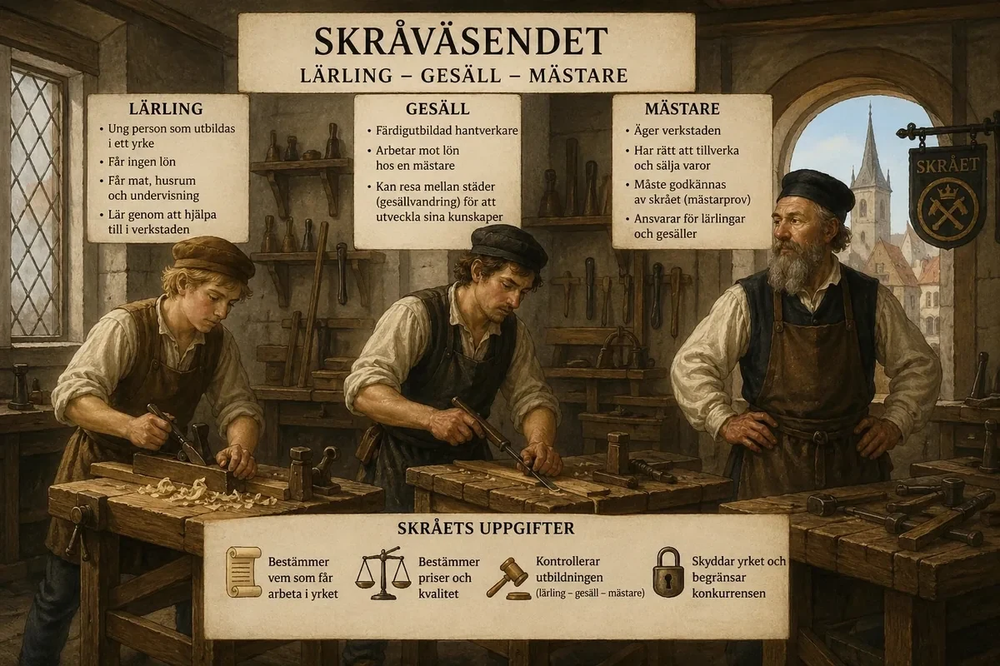
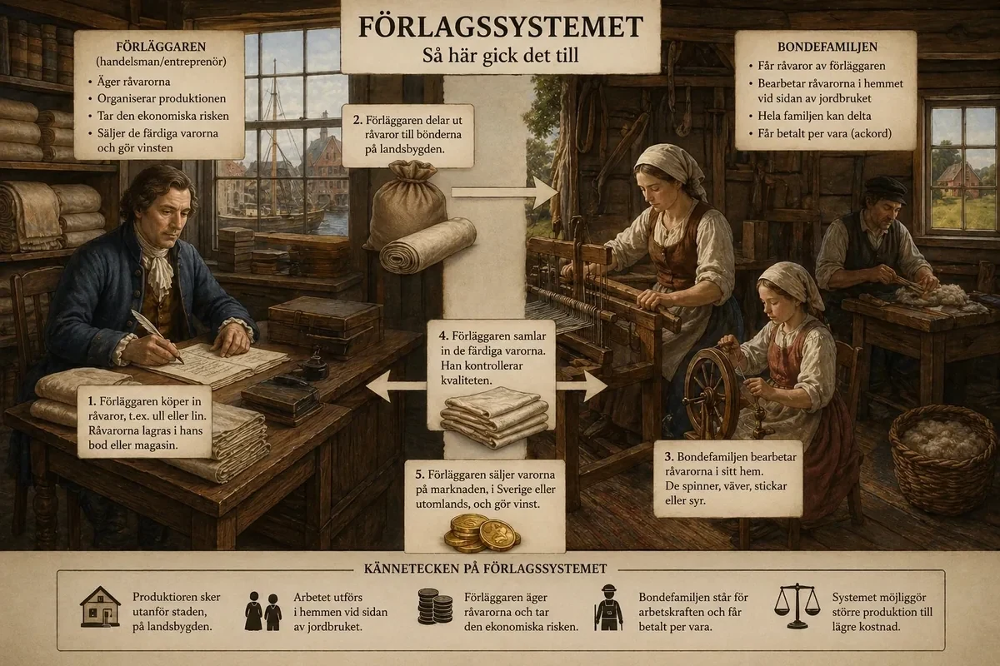
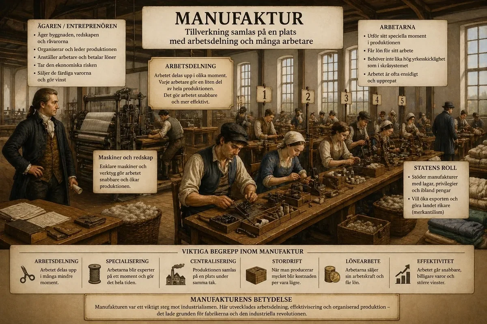

— från skråväsendets verkstäder till manufakturernas samlade produktion —
Under medeltiden och långt in på 1600-talet organiserades tillverkningen i Europa genom det så kallade skråväsendet. Detta system byggde på att hantverkare inom samma yrke gick samman i en organisation, ett skrå, som kontrollerade produktionen i städerna. Skråväsendet var inte bara ett ekonomiskt system utan också ett socialt och utbildningsmässigt system som styrde hur man blev hantverkare och hur varor fick tillverkas och säljas. Produktionen skedde i små verkstäder där arbetet utfördes för hand och där varje produkt ofta tillverkades från början till slut av samma person eller inom en mycket liten arbetsgrupp.
Inom skråväsendet fanns en tydlig hierarki med tre centrala roller: lärling, gesäll och mästare. Lärlingen var en ung person som började sin utbildning hos en mästare och lärde sig yrket genom att arbeta praktiskt under flera år. Lärlingen fick ingen egentlig lön, utan ersattes med mat, bostad och utbildning. När lärlingen hade tillägnat sig tillräckliga kunskaper blev han gesäll. Gesällen var en färdigutbildad hantverkare som arbetade mot lön och ofta reste mellan olika städer för att utveckla sin yrkesskicklighet, en process som kallas gesällvandring. För att bli mästare krävdes att man genomförde ett mästarprov och blev godkänd av skrået. Mästaren ägde sin verkstad, hade rätt att producera och sälja varor och ansvarade för utbildningen av nya lärlingar.
Skråväsendet garanterade hög kvalitet och stabilitet, men det var också ett system som begränsade utvecklingen. Genom att kontrollera hur många som fick arbeta inom ett yrke och hur produktionen skulle ske, hindrade skråna både konkurrens och innovation. När efterfrågan på varor ökade under 1500- och 1600-talet, bland annat på grund av växande handel och befolkning, blev det tydligt att skråsystemet inte kunde producera tillräckligt mycket eller tillräckligt snabbt.

Som en lösning på detta växte förlagssystemet fram, särskilt inom textilproduktionen. Förlagssystemet innebar att produktionen flyttades ut från städerna till landsbygden och organiserades av en kapitalstark handelsman, kallad förläggare. Förläggaren köpte in råvaror, exempelvis ull eller lin, och delade ut dessa till bondefamiljer som bearbetade materialet i sina hem. Arbetet utfördes vid sidan av jordbruket och hela familjen kunde delta i produktionen. När arbetet var klart samlade förläggaren in de färdiga varorna och sålde dem vidare på marknaden med vinst.
Den stora förändringen i förlagssystemet var att produktionen inte längre kontrollerades av hantverkare utan av en person med kapital. Förläggaren ägde råvarorna och organiserade arbetet, medan bondefamiljerna stod för arbetskraften. Dessa fick oftast betalt per producerad vara, vilket kallas ackordslön. Systemet gjorde det möjligt att öka produktionen kraftigt och till lägre kostnad, eftersom arbetskraften på landsbygden var billig och flexibel. Samtidigt innebar det att kvaliteten kunde variera och att förläggaren hade svårt att kontrollera arbetet fullt ut. Trots detta var förlagssystemet ett avgörande steg mot industrialisering, eftersom det introducerade en tydligare uppdelning mellan ägande och arbete.

Under 1600- och 1700-talet utvecklades nästa steg i tillverkningens förändring: manufakturerna. En manufaktur var en större produktionsenhet där många arbetare samlades under samma tak. Till skillnad från förlagssystemet, där arbetet var utspritt i hemmen, centraliserades nu produktionen till en gemensam plats. Detta gjorde det lättare att kontrollera arbetet och organisera produktionen mer effektivt.
En av de viktigaste förändringarna i manufakturerna var införandet av arbetsdelning. Istället för att en hantverkare tillverkade en hel produkt från början till slut, delades arbetet upp i flera mindre moment. Varje arbetare ansvarade för en specifik del av processen och blev därmed specialiserad på just detta moment. Arbetsdelningen gjorde produktionen snabbare och billigare, eftersom varje moment kunde utföras mer effektivt när det upprepades många gånger. Samtidigt innebar det att arbetarna inte längre behövde samma breda yrkesskicklighet som i skråsystemet, vilket gjorde dem mer utbytbara.
Manufakturerna drevs ofta av entreprenörer eller med stöd av staten, särskilt i länder som följde merkantilistiska idéer. Staten ville öka exporten och stärka landets ekonomi genom att producera fler varor inom landet istället för att importera dem. Därför kunde manufakturer få ekonomiskt stöd, privilegier eller monopol på viss produktion.
Trots att manufakturerna innebar en tydlig effektivisering var produktionen fortfarande till stor del beroende av manuellt arbete. Det var först med införandet av maskiner under den industriella revolutionen som nästa stora steg togs. Ändå är det tydligt att utvecklingen från skråväsende till förlagssystem och vidare till manufaktur lade grunden för fabrikssystemet. Genom denna utveckling förändrades både produktionens organisation och människans roll i arbetet.

Sammanfattningsvis kan utvecklingen förstås som en gradvis förändring i tre avseenden: vem som kontrollerar produktionen, var produktionen sker och hur arbetet är organiserat.
I skråväsendet kontrollerades produktionen av hantverkare och skedde i små verkstäder där varje individ hade en helhetskunskap om arbetet. I förlagssystemet flyttades produktionen ut till landsbygden och organiserades av en kapitalägare, medan arbetet utfördes i hemmen. I manufakturerna samlades produktionen på en plats och organiserades genom arbetsdelning, vilket ökade effektiviteten men förändrade arbetets karaktär. Denna utveckling skapade de strukturer som gjorde den industriella revolutionen möjlig, där maskiner och fabriker tog över och produktionen blev storskalig på ett helt nytt sätt.
Historia · Revolutionernas tid · Bakgrund